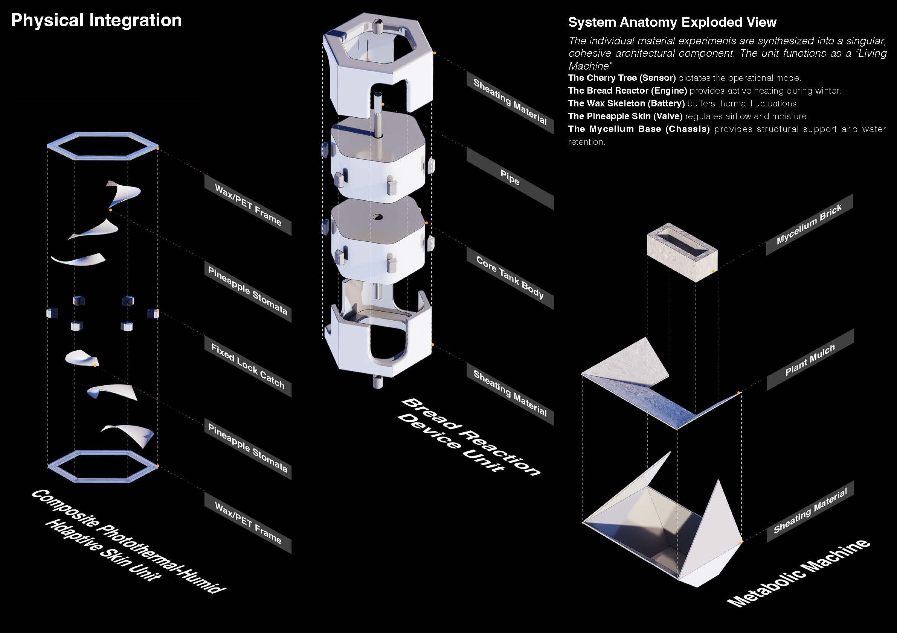
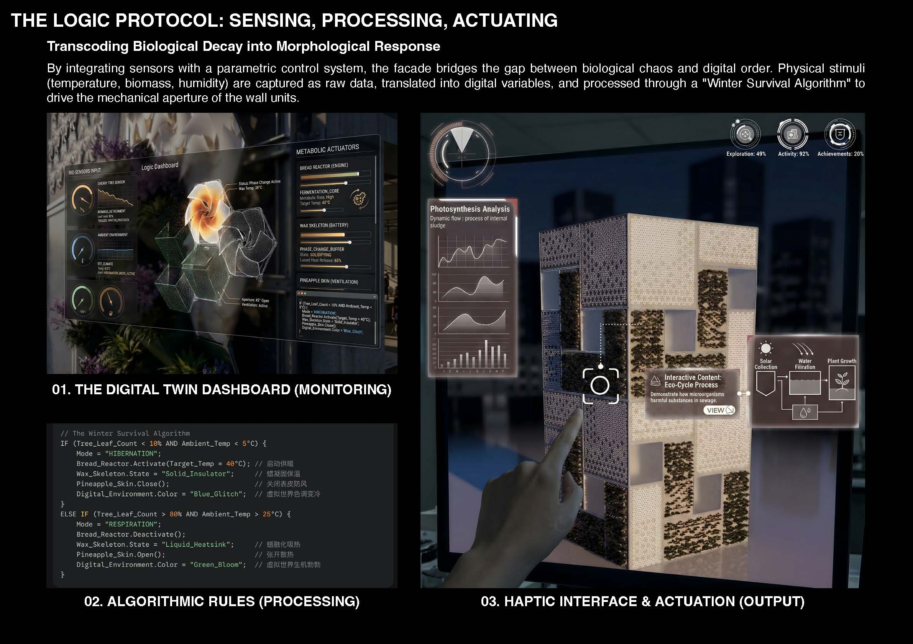

Metabolic Cyclicality Console
Observation & Scanning
SELECT OBJECTS
function / form / context
Material Decoding
Pineapple Skin

Hygromorphic actuator
Moisture signal: 90% to 32%
Organic residue
Sensor trace
Material character
Morphological response
LIVE TELEMETRY
15 days sample
Derived Module
Porous pineapple epidermis becomes a humidity-sensitive ventilation skin for the facade.
TRANSCODING ENGINE
biological decay to morphological response
INPUT
Decayed sliced pineapple
OUTPUT
Hygromorphic actuator
PARAMETRIC CONTROL
temperature / humidity / biomass
WINTER SURVIVAL ALGORITHM
HIBERNATION
RESPONSE MODEL
ventilation closes
MODULE PALETTE
material behaviors
LIVING FACADE RETROFIT
Brush: Pineapple Skin
SYSTEM ANATOMY
exploded wall unit

DIGITAL TWIN
sensing / processing / actuating

METABOLIC ACTUATORS
phase change active
Solar collection
Water filtration
Plant growth
SOURCE ATLAS
38 boards mapped into prototype logic